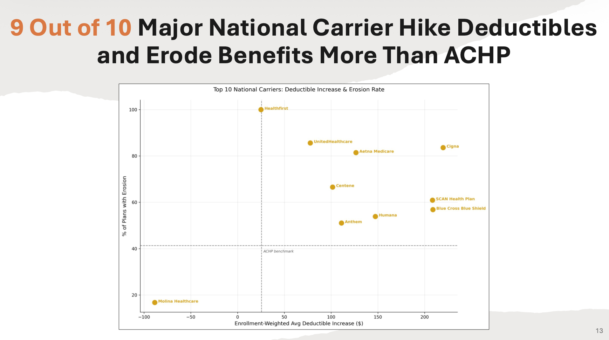

ACHP Drug Benefit Analysis (Graduate Consultant)
Graduate-consultant analysis of 109K+ records in Python, surfacing competitor cost-shifting that eroded Part D drug benefits at 4.5× the rate of ACHP plans. Presented to the executive board; top 3 of 16 teams.
Python109K+ recordsregressiontop 3 / 16